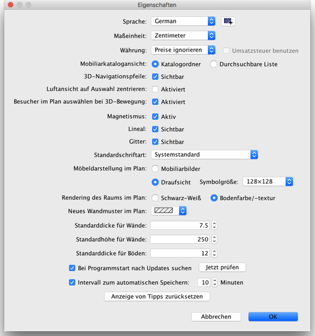

Um die Sweet Home 3D-Einstellungen zu verändern, wählen Sie Sweet Home 3D > Einstellungen... auf Mac OS X oder Datei > Einstellungen... auf
anderen Systemen.

Im Einstellungsfenster können Sie die Sprache einstellen welche
im Sweet Home 3D Benutzerinterface verwendet wird. Außerdem können Sie
die Maßeinheiten einstellen die benutzt wird um die Bemaßung,
das Gitter und die Längen darzustellen.
Die Schaltfläche neben dem Auswahlfeld Sprache ermöglicht den Import von zusätzlichen Sprachbibliotheksdateien mit der Erweiterung SH3L.
Die Auswahlknöpfe (radio buttons) Katalogordner und Durchsuchbare
Liste geben Ihnen die Möglichkeit auszusuchen, wie der Möbelkatalog
angezeigt wird in jedem Sweet Home 3D-Fenster.
Die 3D Navigationspfeile -Checkbox erlaubt es, die Pfeile als
Knöpfe in der 3D-Sicht einzublenden als Hilfe zum navigieren.
Die Magnetismus -Checkbox aktiviert oder deaktiviert den Magnetismus
beim Zeichnen von Wänden und setzen
von Möbeln.
Die Lineal -Checkbox macht es möglich, die Lineale sichtbar oder
unsichtbar zu machen.
Die Gitter -Checkbox macht das Gitter sichtbar oder unsichtbar.
Die Auswahlknöpfe (radio buttons) Mobiliarbilder und Von-Oben-Ansicht
geben Ihnen die Möglichkeit auszuwählen, wie Möbel im
Plan angezeigt werden sollen (Siehe Bilder weiter unten).
Die Auswahlknöpfe Schwarz-Weiß und Bodenfarbe /-textur
erlauben es, ob Räume im Plan farblich, mit einer Textur oder Graustufen
dargestellt werden sollen (ausgedruckt = weiß).
Die Wandmuster im Plan -ComboBox bietet die Möglichkeit,
ein bestimmtes Muster zu wählen um die Wände zu füllen.
Der Wert Standardbreite für Wände setzt die Dicke von allen Wänden,
die erstellt werden nachdem die Einstellungen mit "OK" geschlossen werden.
Der Wert Standardhöhe für Wände setzt die Höhe von allen Wänden,
die erstellt werden nachdem die Einstellungen mit "OK" geschlossen werden.
Der Wert Standarddicke für Böden setzt die Dicke von allen Böden,
die nach dem Schließen der Einstellungen mit "OK" erstellt werden.
Über das Feld Intervall zum automatischen Speichern wird, sofern diese Option
aktiviert ist, der Zeitraum in Minuten festgelegt, nach dem die geöffneten
Wohnungspläne immer wieder automatisch gespeichert werden sollen.
Die Wohnungspläne werden dann im angegebenen Rhythmus automatisch in privaten
Dateien gespeichert, welche beim nächsten Start von Sweet Home 3D zu
Wiederherstellungszwecken eingesetzt werden, sollte das Programm abstürzen.
Zu guter letzt: Der Anzeige von Tipps zurücksetzen-Button
setzt die Antworten in den Tipp-Fenstern zurück (Tipp nicht wieder
anzeigen) das erscheint, wenn Sie bestimmte Werkzeuge benutzen. Dies
bedeutet, dass alle Dialogboxen, bei denen ausgewählt wurde, sie
sollen nicht mehr erscheinen, wieder angezeigt werden!
|